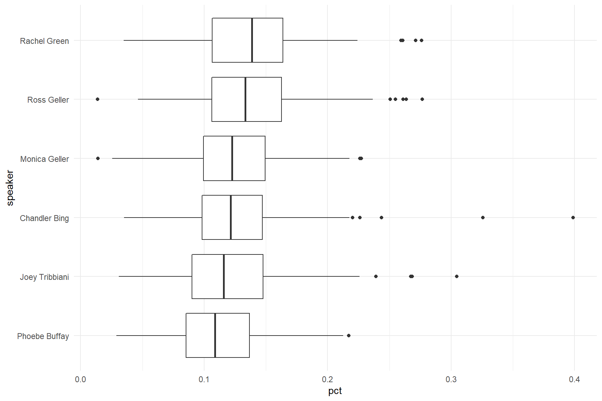
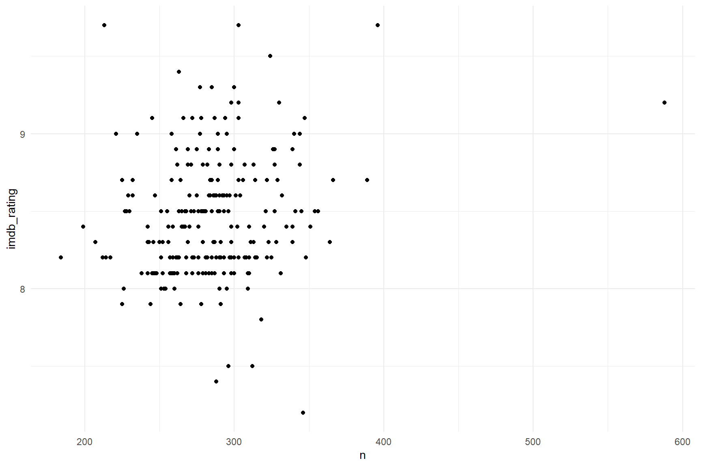

Friends
Jim Gruman
September 8, 2020
Last updated: 2020-09-10
Checks: 7 0
Knit directory: myTidyTuesday/
This reproducible R Markdown analysis was created with workflowr (version 1.6.2). The Checks tab describes the reproducibility checks that were applied when the results were created. The Past versions tab lists the development history.
Great! Since the R Markdown file has been committed to the Git repository, you know the exact version of the code that produced these results.
Great job! The global environment was empty. Objects defined in the global environment can affect the analysis in your R Markdown file in unknown ways. For reproduciblity it’s best to always run the code in an empty environment.
The command set.seed(20200907) was run prior to running the code in the R Markdown file. Setting a seed ensures that any results that rely on randomness, e.g. subsampling or permutations, are reproducible.
Great job! Recording the operating system, R version, and package versions is critical for reproducibility.
Nice! There were no cached chunks for this analysis, so you can be confident that you successfully produced the results during this run.
Great job! Using relative paths to the files within your workflowr project makes it easier to run your code on other machines.
Great! You are using Git for version control. Tracking code development and connecting the code version to the results is critical for reproducibility.
The results in this page were generated with repository version ded5953. See the Past versions tab to see a history of the changes made to the R Markdown and HTML files.
Note that you need to be careful to ensure that all relevant files for the analysis have been committed to Git prior to generating the results (you can use wflow_publish or wflow_git_commit). workflowr only checks the R Markdown file, but you know if there are other scripts or data files that it depends on. Below is the status of the Git repository when the results were generated:
Ignored files:
Ignored: .Rhistory
Ignored: .Rproj.user/
Unstaged changes:
Modified: analysis/GDPRfines.Rmd
Note that any generated files, e.g. HTML, png, CSS, etc., are not included in this status report because it is ok for generated content to have uncommitted changes.
These are the previous versions of the repository in which changes were made to the R Markdown (analysis/Friends.Rmd) and HTML (docs/Friends.html) files. If you’ve configured a remote Git repository (see ?wflow_git_remote), click on the hyperlinks in the table below to view the files as they were in that past version.
| File | Version | Author | Date | Message |
|---|---|---|---|---|
| Rmd | ded5953 | opus1993 | 2020-09-10 | wflow_publish(“analysis/Friends.Rmd”) |
The data this week comes from the friends R package for the Friends transcripts and information on the episodes themselves, like when the characters interact with one another.
There’s text, appearance, ratings, and many other datasets here. We will check out the tidytext mining package and the newly released Supervised Machine Learning for Text Analysis in R book, both which are freely available online.
Download the weekly data and make available in the tt object.
tt <- tt_load("2020-09-08")
Downloading file 1 of 3: `friends.csv`
Downloading file 2 of 3: `friends_info.csv`
Downloading file 3 of 3: `friends_emotions.csv`Take an initial look at the format of the data available.
tt %>%
purrr::map(glimpse)Rows: 67,373
Columns: 6
$ text <chr> "There's nothing to tell! He's just some guy I work with!...
$ speaker <chr> "Monica Geller", "Joey Tribbiani", "Chandler Bing", "Phoe...
$ season <dbl> 1, 1, 1, 1, 1, 1, 1, 1, 1, 1, 1, 1, 1, 1, 1, 1, 1, 1, 1, ...
$ episode <dbl> 1, 1, 1, 1, 1, 1, 1, 1, 1, 1, 1, 1, 1, 1, 1, 1, 1, 1, 1, ...
$ scene <dbl> 1, 1, 1, 1, 1, 1, 1, 1, 1, 1, 1, 1, 1, 1, 1, 1, 1, 1, 1, ...
$ utterance <dbl> 1, 2, 3, 4, 5, 6, 7, 8, 9, 10, 11, 12, 13, 14, 15, 16, 17...
Rows: 236
Columns: 8
$ season <dbl> 1, 1, 1, 1, 1, 1, 1, 1, 1, 1, 1, 1, 1, 1, 1, 1, 1...
$ episode <dbl> 1, 2, 3, 4, 5, 6, 7, 8, 9, 10, 11, 12, 13, 14, 15...
$ title <chr> "The Pilot", "The One with the Sonogram at the En...
$ directed_by <chr> "James Burrows", "James Burrows", "James Burrows"...
$ written_by <chr> "David Crane & Marta Kauffman", "David Crane & Ma...
$ air_date <date> 1994-09-22, 1994-09-29, 1994-10-06, 1994-10-13, ...
$ us_views_millions <dbl> 21.5, 20.2, 19.5, 19.7, 18.6, 18.2, 23.5, 21.1, 2...
$ imdb_rating <dbl> 8.3, 8.1, 8.2, 8.1, 8.5, 8.1, 9.0, 8.1, 8.2, 8.1,...
Rows: 12,606
Columns: 5
$ season <dbl> 1, 1, 1, 1, 1, 1, 1, 1, 1, 1, 1, 1, 1, 1, 1, 1, 1, 1, 1, ...
$ episode <dbl> 1, 1, 1, 1, 1, 1, 1, 1, 1, 1, 1, 1, 1, 1, 1, 1, 1, 1, 1, ...
$ scene <dbl> 4, 4, 4, 4, 4, 4, 4, 4, 4, 4, 4, 4, 4, 4, 4, 4, 4, 5, 5, ...
$ utterance <dbl> 1, 3, 4, 5, 6, 7, 8, 10, 11, 12, 13, 14, 15, 16, 17, 18, ...
$ emotion <chr> "Mad", "Neutral", "Joyful", "Neutral", "Neutral", "Neutra...$friends
# A tibble: 67,373 x 6
text speaker season episode scene utterance
<chr> <chr> <dbl> <dbl> <dbl> <dbl>
1 There's nothing to tell! He's just~ Monica Ge~ 1 1 1 1
2 C'mon, you're going out with the g~ Joey Trib~ 1 1 1 2
3 All right Joey, be nice. So does h~ Chandler ~ 1 1 1 3
4 Wait, does he eat chalk? Phoebe Bu~ 1 1 1 4
5 (They all stare, bemused.) Scene Dir~ 1 1 1 5
6 Just, 'cause, I don't want her to ~ Phoebe Bu~ 1 1 1 6
7 Okay, everybody relax. This is not~ Monica Ge~ 1 1 1 7
8 Sounds like a date to me. Chandler ~ 1 1 1 8
9 [Time Lapse] Scene Dir~ 1 1 1 9
10 Alright, so I'm back in high schoo~ Chandler ~ 1 1 1 10
# ... with 67,363 more rows
$friends_info
# A tibble: 236 x 8
season episode title directed_by written_by air_date us_views_millio~
<dbl> <dbl> <chr> <chr> <chr> <date> <dbl>
1 1 1 The ~ James Burr~ David Cra~ 1994-09-22 21.5
2 1 2 The ~ James Burr~ David Cra~ 1994-09-29 20.2
3 1 3 The ~ James Burr~ Jeffrey A~ 1994-10-06 19.5
4 1 4 The ~ James Burr~ Alexa Jun~ 1994-10-13 19.7
5 1 5 The ~ Pamela Fry~ Jeff Gree~ 1994-10-20 18.6
6 1 6 The ~ Arlene San~ Adam Chas~ 1994-10-27 18.2
7 1 7 The ~ James Burr~ Jeffrey A~ 1994-11-03 23.5
8 1 8 The ~ James Burr~ Marta Kau~ 1994-11-10 21.1
9 1 9 The ~ James Burr~ Jeff Gree~ 1994-11-17 23.1
10 1 10 The ~ Peter Bone~ Adam Chas~ 1994-12-15 19.9
# ... with 226 more rows, and 1 more variable: imdb_rating <dbl>
$friends_emotions
# A tibble: 12,606 x 5
season episode scene utterance emotion
<dbl> <dbl> <dbl> <dbl> <chr>
1 1 1 4 1 Mad
2 1 1 4 3 Neutral
3 1 1 4 4 Joyful
4 1 1 4 5 Neutral
5 1 1 4 6 Neutral
6 1 1 4 7 Neutral
7 1 1 4 8 Scared
8 1 1 4 10 Joyful
9 1 1 4 11 Joyful
10 1 1 4 12 Sad
# ... with 12,596 more rowslibrary(glue)
friends.text <- tt$friends %>%
inner_join(tt$friends_info, by = c("season", "episode")) %>%
mutate(episode_title = glue("{ season }.{ episode } {title}"),
episode_title = fct_reorder(episode_title, season + .001*episode))
epi.info <- tt$friends_info
emotion <- tt$friends_emotions
main.characters <- friends.text %>%
count(speaker, sort = TRUE) %>%
head(6) %>%
select(speaker) %>%
separate(speaker, into = c("firstname", "lastname"), remove = FALSE)
main.characters %>%
pull(speaker)[1] "Rachel Green" "Ross Geller" "Chandler Bing" "Monica Geller"
[5] "Joey Tribbiani" "Phoebe Buffay" Words each Character had per season
With inspiration from Dr. Christian Hoggard @CSHoggard
friends.parsed <- friends.text %>%
filter(speaker %in% main.characters$speaker) %>%
mutate(
word_count = str_count(text, "\\w+"),
speaker = word(speaker)
) %>%
select(-utterance, -scene) %>%
group_by(speaker, season) %>%
summarise(word_sum = sum(word_count))
friends.parsed %>%
group_by(speaker) %>%
summarise(total_sum = sum(word_sum))# A tibble: 6 x 2
speaker total_sum
<chr> <int>
1 Chandler 93526
2 Joey 93642
3 Monica 89597
4 Phoebe 88011
5 Rachel 105237
6 Ross 104144img_friends <- "https://turbologo.com/articles/wp-content/uploads/2019/12/friends-logo-cover-678x381.png."p <- ggplot(friends.parsed, aes(season, word_sum, colour = speaker)) +
geom_line(size = 1) +
geom_point(size = 3) +
lims(y = c(5000,14000)) +
scale_x_continuous(n.breaks = 10) +
scale_colour_manual(values = friends.pal) +
labs(title = "The One About Who Spoke the Most?",
subtitle = "Total number of words per season",
caption = "@jim_gruman | Source: friends R package | #TidyTuesday",
x = "Season",
y = "Word count") +
annotate("text", x = 9, y = 13500, size = 4, colour = "grey97", family = "IBM Plex Sans", label = "Rachel spoke over 17,000 words \n more than Pheobe!") +
guides(colour = guide_legend(nrow = 1, override.aes = list(linetype = 0, size=4))) +
theme(legend.position = "top",
legend.title = element_blank(),
legend.text = element_text(color = "grey97", size = 11),
plot.margin = margin(20, 20, 20, 20),
plot.title.position = "plot",
plot.background = element_rect(fill = "#000000"),
panel.grid.major = element_line(size = 0.35, linetype = 'solid', colour = "grey10"),
panel.grid.minor = element_line(size = 0.3, linetype = 'solid', colour = "grey10"),
axis.text.x = element_text(color = "grey97"),
axis.title.x = element_text(color = "grey97", margin = margin(20, 0, 5, 0)),
axis.text.y = element_text(color = "grey97", margin = margin(0, 20, 0, 5)),
axis.title.y = element_text(color = "grey97"),
plot.title = element_text(color = "grey97", size = 32, margin = margin(0, 0, 10, 0)),
plot.subtitle = element_text(color = "grey97", size = 12, margin = margin(0, 0, 20, 0)),
plot.caption = element_text(size = 9, colour = "grey97", margin = margin(20, 0, 0, 0)))
p1<-cowplot::ggdraw() +
cowplot::draw_plot(p) +
cowplot::draw_image(img_friends, scale=0.2, y=-0.45, x=-0.4)
ggsave(filename = "docs/assets/friends-1.pdf", plot = p1, width = 12, height = 8, device = cairo_pdf)
pdftools::pdf_convert(pdf = "docs/assets/friends-1.pdf", format = "png",
dpi = 300, filenames = "docs/assets/friends-1.png")Converting page 1 to docs/assets/friends-1.png... done![1] "docs/assets/friends-1.png"knitr::include_graphics("assets/friends-1.png", error = FALSE)
Visualize the Lines by Season in Ranks
With inspiration from David Smale @committedtotape
library(ggbump)
lines_by_season <- friends.text %>%
filter(speaker %in% main.characters$speaker) %>%
count(season, speaker, name = "lines") %>%
group_by(season) %>%
arrange(season, -lines) %>%
mutate(rank = row_number()) %>%
inner_join(main.characters, by = "speaker")
p2<-lines_by_season %>%
ggplot(aes(season, rank, color = firstname))+
geom_point(size = 7) +
geom_text(data = lines_by_season %>% filter(season == 1),
aes(x = season - .2, label = firstname), size = 6, hjust =1)+
geom_text(data = lines_by_season %>% filter(season == 10),
aes(x = season + .2, label = firstname), size = 6, hjust =0)+
geom_bump(size = 2, smooth = 5)+
scale_x_continuous(limits = c(0, 11),
breaks = seq(1,10,1),
position = "top")+
scale_y_reverse(breaks = seq(1,6,1),
position = "left")+
scale_color_manual(values = friends.pal)+
labs(title = "Aw, Phoebs!",
subtitle = "Friends ranked by number of lines per seasons \nPhoebe has the fewest lines in 5 of 10 seasons",
caption = "Data: friends R package | @jim_gruman",
x = "Season", y = "Rank")+
theme(legend.position = "none",
plot.background = element_rect(fill = "#000000", color = "gray10"),
axis.text.x = element_text(color = "gray90", size = 16),
axis.text.y = element_text(color = "gray90", size = 16),
axis.title.x.top = element_text(color = "gray90", size = 16,
hjust = 0.5,
margin = margin(0,0,10,0)),
axis.title.y.left = element_text(color = "gray90", size = 16,
hjust = 0, vjust = 0.5,
angle = 0),
plot.title = element_text(color = "#9C61FD", hjust = 0.5,
size = 34, margin = margin(0,0,10,0)),
plot.subtitle = element_text(color = "gray90", hjust = 0.5,
size = 16, margin = margin(0,0,20,0)),
plot.caption = element_text(color = "gray90", hjust = 1, size = 10,
margin = margin(20,0,5,0)),
plot.margin = margin(20,20,20,20),
panel.grid = element_blank()
)
ggsave(filename = "docs/assets/friends-2.pdf", plot = p2, width = 12,height = 8, device = cairo_pdf)
pdftools::pdf_convert(pdf = "docs/assets/friends-2.pdf", format = "png",
dpi = 300, filenames = "docs/assets/friends-2.png")Converting page 1 to docs/assets/friends-2.png... done![1] "docs/assets/friends-2.png"knitr::include_graphics("assets/friends-2.png", error = FALSE)
Let’s model features with regression to infer what features drive imdb_rating
speaker_lines_per_episode<-friends.text %>%
count(speaker, episode_title, imdb_rating) %>%
complete(speaker, episode_title, fill = list(n = 0)) %>%
group_by(episode_title) %>%
fill(imdb_rating, .direction = "downup") %>%
ungroup() %>%
add_count(episode_title, wt = n, name = "episode_total") %>%
mutate(pct = n / episode_total)
speaker_lines_per_episode %>%
semi_join(main.characters, by = "speaker") %>%
mutate(speaker = fct_reorder(speaker, n)) %>%
ggplot(aes(pct, speaker))+
geom_boxplot() 
speaker_lines_per_episode %>%
semi_join(main.characters, by = "speaker") %>%
group_by(speaker) %>%
summarize(correlation = cor(pct,imdb_rating))# A tibble: 6 x 2
speaker correlation
<chr> <dbl>
1 Chandler Bing -0.0416
2 Joey Tribbiani -0.0135
3 Monica Geller 0.0678
4 Phoebe Buffay -0.0170
5 Rachel Green 0.0379
6 Ross Geller 0.185 friends.text %>%
group_by(episode_title) %>%
summarize(n = n(),
imdb_rating = min(imdb_rating)) %>%
ggplot(aes(n, imdb_rating))+
geom_point()
# setup the training set
speakers_per_episode_wide<- speaker_lines_per_episode %>%
semi_join(main.characters, by = "speaker") %>%
select(episode_title, speaker, pct, imdb_rating, episode_total) %>%
spread(speaker, pct) %>%
select(-episode_title)
speakers_per_episode_wide %>%
lm(imdb_rating ~ ., data = .) %>%
# aov() %>%
summary()
Call:
lm(formula = imdb_rating ~ ., data = .)
Residuals:
Min 1Q Median 3Q Max
-1.36610 -0.26579 -0.03479 0.23945 1.26931
Coefficients:
Estimate Std. Error t value Pr(>|t|)
(Intercept) 7.3885721 0.3259390 22.669 < 2e-16 ***
episode_total 0.0018619 0.0006468 2.879 0.00437 **
`Chandler Bing` 0.0559465 0.6348284 0.088 0.92985
`Joey Tribbiani` 0.3301073 0.6275412 0.526 0.59938
`Monica Geller` 1.1144906 0.6629858 1.681 0.09413 .
`Phoebe Buffay` 0.5689463 0.7366649 0.772 0.44072
`Rachel Green` 0.2789640 0.6235201 0.447 0.65501
`Ross Geller` 1.8553543 0.6098077 3.043 0.00262 **
---
Signif. codes: 0 '***' 0.001 '**' 0.01 '*' 0.05 '.' 0.1 ' ' 1
Residual standard error: 0.3886 on 228 degrees of freedom
Multiple R-squared: 0.07798, Adjusted R-squared: 0.04968
F-statistic: 2.755 on 7 and 228 DF, p-value: 0.009136The more Ross speaks, the more popular the episode is
Let’s look at words, and weighted log-odds ratios
library(tidytext)
library(tidylo)
words_unnested <- friends.text %>%
left_join(emotion, by = c("season", "episode", "utterance")) %>%
select(text, speaker, season, episode_title, emotion) %>%
unnest_tokens(word, text) %>%
anti_join(stop_words, by = "word") %>%
filter(!word %in% c("yeah","hey","gonna","uh", "y'know", "um", "ah", "um", "la", "wh")) %>%
filter(!str_detect(word, "[:digit:]|^aa"),
!is.na(emotion), emotion != "Neutral" )
words_unnested %>%
count(word, sort = TRUE)# A tibble: 9,023 x 2
word n
<chr> <int>
1 ross 3461
2 god 2872
3 joey 2380
4 time 2090
5 guys 2077
6 rachel 2048
7 monica 2032
8 chandler 2009
9 guy 1782
10 phoebe 1589
# ... with 9,013 more rowsby_speaker_word<- words_unnested %>%
semi_join(main.characters, by = "speaker") %>%
count(speaker, word, emotion, name = "n_emotion") %>%
group_by(speaker, word) %>%
summarize(n = sum(n_emotion),
emotion = first(emotion, order_by = -n_emotion))
# what are the most over-represented words for each character?
unique_sentiments <- by_speaker_word %>%
bind_log_odds(speaker, word, n) %>%
group_by(speaker) %>%
slice_max(log_odds_weighted, n = 20) %>%
mutate(size = scales::rescale(log_odds_weighted, to = c(3,9)))Visualize a word cloud with words most representative of each character and most common emotional sentiment
Jack Davison @JDavison_ inspired this beautiful word cloud
Credit David Robinson for the tidylo insight
p3<-ggplot(unique_sentiments,
aes(
label = word,
size = log_odds_weighted,
color = emotion,
alpha = log_odds_weighted
)) +
ggwordcloud::geom_text_wordcloud_area(area_corr_power = 1) +
facet_wrap(~ speaker) +
scale_radius(range = c(3, 20)) +
scale_color_manual(values = friends.pal) +
scale_alpha(range = c(.5, 1)) +
theme(
plot.background = element_rect(fill = "#000000", color = NA),
strip.text = element_text(
family = "Gabriel Weiss' Friends Font",
size = 20,
color = "white"
),
plot.margin = unit(rep(1, 4), "cm"),
panel.spacing = unit(.5, "cm"),
plot.title = element_text(
family = "Gabriel Weiss' Friends Font",
size = 36,
color = "#f4c93cff",
hjust = .5,
vjust = .5
),
plot.subtitle = ggtext::element_markdown(
hjust = .5,
color = "white",
size = 15
),
plot.caption = ggtext::element_markdown(
hjust = .5,
vjust = .5,
color = "#f4c93cff"
)
) +
labs(title = "the one with the sentiment analysis",
subtitle = "(<span style='color:#F74035'>Joyful</span> <span style='color:#008F48'>Mad</span> <span style='color:#3F9DD4'>Peaceful</span> <span style='color:#9787CD'>Powerful</span> <span style='color:#F6D400'>Sad</span> <span style='color:#941205'>Scared</span>)<br><br>",
caption = "<br>Data from <b>{friends}</b> (github.com/EmilHvitfeldt/friends)<br> Visualisation by <b>Jim Gruman</b> (Twitter @jim_gruman)<br>Code found at <b>opus1993.github.io/myTidyTuesday/</b>")
ggsave(filename = "docs/assets/friends-3.pdf", plot = p3, width = 18, height = 12, device = cairo_pdf)
pdftools::pdf_convert(pdf = "docs/assets/friends-3.pdf", format = "png",
dpi = 300, filenames = "docs/assets/friends-3.png")Converting page 1 to docs/assets/friends-3.png... done![1] "docs/assets/friends-3.png"knitr::include_graphics("assets/friends-3.png", error = FALSE)
sessionInfo()R version 4.0.0 (2020-04-24)
Platform: x86_64-w64-mingw32/x64 (64-bit)
Running under: Windows 10 x64 (build 19041)
Matrix products: default
locale:
[1] LC_COLLATE=English_United States.1252
[2] LC_CTYPE=English_United States.1252
[3] LC_MONETARY=English_United States.1252
[4] LC_NUMERIC=C
[5] LC_TIME=English_United States.1252
attached base packages:
[1] stats graphics grDevices utils datasets methods base
other attached packages:
[1] tidylo_0.1.0 ggbump_0.1.0 glue_1.4.2 showtext_0.9
[5] showtextdb_3.0 sysfonts_0.8.1 tidytext_0.2.5 tidytuesdayR_1.0.1
[9] forcats_0.5.0 stringr_1.4.0 dplyr_1.0.2 purrr_0.3.4
[13] readr_1.3.1 tidyr_1.1.2 tibble_3.0.3 ggplot2_3.3.2
[17] tidyverse_1.3.0 workflowr_1.6.2
loaded via a namespace (and not attached):
[1] ggtext_0.1.0.9000 fs_1.5.0 usethis_1.6.1 lubridate_1.7.9
[5] httr_1.4.2 ggwordcloud_0.5.0 rprojroot_1.3-2 SnowballC_0.7.0
[9] tools_4.0.0 backports_1.1.9 utf8_1.1.4 R6_2.4.1
[13] DBI_1.1.0 colorspace_1.4-1 withr_2.2.0 tidyselect_1.1.0
[17] curl_4.3 compiler_4.0.0 git2r_0.27.1 cli_2.0.2
[21] rvest_0.3.6 xml2_1.3.2 labeling_0.3 scales_1.1.1
[25] askpass_1.1 digest_0.6.25 rmarkdown_2.3 pkgconfig_2.0.3
[29] htmltools_0.5.0 dbplyr_1.4.4 rlang_0.4.7 readxl_1.3.1
[33] rstudioapi_0.11 generics_0.0.2 farver_2.0.3 jsonlite_1.7.1
[37] tokenizers_0.2.1 magrittr_1.5 Matrix_1.2-18 Rcpp_1.0.5
[41] munsell_0.5.0 fansi_0.4.1 lifecycle_0.2.0 stringi_1.5.3
[45] whisker_0.4 yaml_2.2.1 grid_4.0.0 blob_1.2.1
[49] promises_1.1.1 crayon_1.3.4 lattice_0.20-41 haven_2.3.1
[53] cowplot_1.1.0 gridtext_0.1.1 hms_0.5.3 magick_2.4.0
[57] knitr_1.29 pillar_1.4.6 markdown_1.1 reprex_0.3.0
[61] evaluate_0.14 pdftools_2.3.1 qpdf_1.1 modelr_0.1.8
[65] png_0.1-7 vctrs_0.3.4 httpuv_1.5.4 selectr_0.4-2
[69] cellranger_1.1.0 gtable_0.3.0 assertthat_0.2.1 xfun_0.16
[73] broom_0.7.0 janeaustenr_0.1.5 later_1.1.0.1 ellipsis_0.3.1